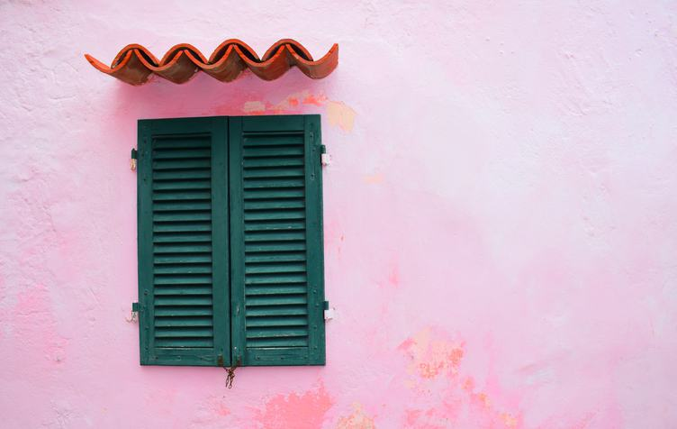

Back
Netherlands
Spain
France
Visiting the pastelle city
By
Jerry Henderson
, in Tourism

View all photos
As you drive into the town from Alicate airport you will pass between two salt lakes - one is blue/green and the other is an impressive pink colour.